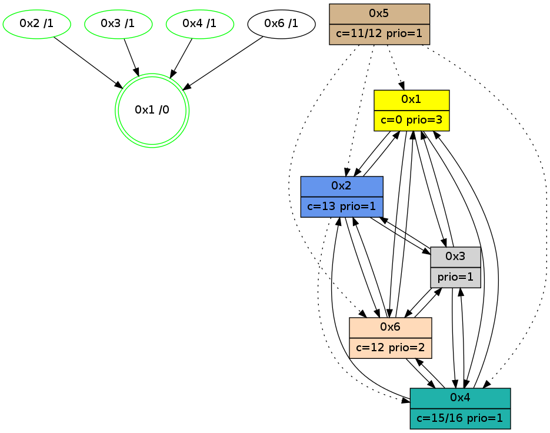

>> << IDX [start] -100 -25 -5 +0 +5 +25 +100 [1090.16928697]
 Previous packets
----------------------------------------------------------------------
1085.248203 beacon01(adaf) #0 coord=01,02,05,03,04,06 cycle=432.0ms assoc
-- color-indic=1 64 50 65
1085.258164 beacon02(adaf) #0 coord=01,02,05,03,04,06 cycle=432.0ms assoc 64 01 9a
1085.268164 beacon05(adaf) #0 coord=01,02,05,03,04,06 cycle=432.0ms assoc 64 a7 b0
1085.278164 beacon03(adaf) #0 coord=01,02,05,03,04,06 cycle=432.0ms assoc 64 3b 94
1085.288164 beacon04(adaf) #0 coord=01,02,05,03,04,06 cycle=432.0ms assoc 64 9d be
1085.298165 beacon06(adaf) #0 coord=01,02,05,03,04,06 cycle=432.0ms assoc 64 e9 a2
1085.309715 [STC(6)->4-.->1 #0.181 to-color d=2]
1085.313574 [Hello(2): seq=1379 sym=3,1 asym=4 sysInfo=hasWarning stat=3:3,1,7,1/1:14,12,6,0/4:10,14,3,0]
1085.316091 [Hello(4): seq=892 sym=1,6,3 sysInfo=hasWarning stat=1:8,9,6,0/6:9,4,9,6/3:15,15,0,3]
1085.319125 [Color(4) seq=173 @0:0 color=15/16 prio=1 c=0,7,c;1,4,6,8,9,b,d,e]
----------------------------------------------------------------------
1085.740312 beacon01(adaf) #0 coord=01,02,05,03,04,06 cycle=432.0ms assoc
-- color-indic=1 64 1c d5
1085.760273 beacon05(adaf) #0 coord=01,02,05,03,04,06 cycle=432.0ms assoc 64 eb 00
1085.790274 beacon06(adaf) #0 coord=01,02,05,03,04,06 cycle=432.0ms assoc 64 a5 12
1085.801747 [Hello(3): seq=891 sym=6,2,1,4 sysInfo=hasWarning stat=6:12,2,4,4/2:0,5,3,0/1:12,14,1,1/4:1,4,4,1]
1085.804410 [Hello(1): seq=793 sym=2,4,3 sysInfo=hasWarning,coloring-mode-on,ColoringModeRequestCalled stat=2:8,3,6,0/4:15,3,4,1/3:2,0,3,0]
1085.806785 [Color(1) seq=319 @0:0 color=0 prio=3 c=c,d,f;7,e]
1085.811039 [Hello(6): seq=806 sym=4,3 asym=2,1 sysInfo=hasWarning stat=4:15,4,6,1/3:3,13,15,10/2:10,6,4,0/1:14,9,3,1]
----------------------------------------------------------------------
1086.232421 beacon01(adaf) #0 coord=01,02,05,03,04,06 cycle=432.0ms assoc
-- color-indic=1 64 d8 ba
1086.242381 beacon02(adaf) #0 coord=01,02,05,03,04,06 cycle=432.0ms assoc 64 89 45
1086.252381 beacon05(adaf) #0 coord=01,02,05,03,04,06 cycle=432.0ms assoc 64 2f 6f
1086.262382 beacon03(adaf) #0 coord=01,02,05,03,04,06 cycle=432.0ms assoc 64 b3 4b
1086.272382 beacon04(adaf) #0 coord=01,02,05,03,04,06 cycle=432.0ms assoc 64 15 61
1086.282382 beacon06(adaf) #0 coord=01,02,05,03,04,06 cycle=432.0ms assoc 64 61 7d
1086.294907 [Hello(4): seq=893 sym=1,6,3 sysInfo=hasWarning stat=1:9,10,6,0/6:10,4,9,6/3:0,15,0,3]
1086.297905 [Color(4) seq=174 @0:0 color=15/16 prio=1 c=0,7,c;1,4,6,8,9,b,d,e]
1086.300552 [Color(2) seq=278 @0:0 color=13 prio=1 c=0,7,c,e,f;1,4,6,8,9,b]
----------------------------------------------------------------------
1086.724530 beacon01(adaf) #0 coord=01,02,05,03,04,06 cycle=432.0ms assoc
-- color-indic=1 64 95 bd
1086.734492 beacon02(adaf) #0 coord=01,02,05,03,04,06 cycle=432.0ms assoc 64 c4 42
1086.744492 beacon05(adaf) #0 coord=01,02,05,03,04,06 cycle=432.0ms assoc 64 62 68
1086.754491 beacon03(adaf) #0 coord=01,02,05,03,04,06 cycle=432.0ms assoc 64 fe 4c
1086.764492 beacon04(adaf) #0 coord=01,02,05,03,04,06 cycle=432.0ms assoc 64 58 66
1086.774493 beacon06(adaf) #0 coord=01,02,05,03,04,06 cycle=432.0ms assoc 64 2c 7a
1086.786177 [Hello(3): seq=892 sym=6,2,1,4 sysInfo=hasWarning stat=6:13,2,4,4/2:0,6,3,0/1:13,15,1,1/4:1,5,4,1]
1086.788839 [Hello(1): seq=794 sym=2,4,6,3 sysInfo=hasWarning,coloring-mode-on,ColoringModeRequestCalled stat=2:8,4,6,0/4:15,4,4,1/6:0,0,0,0/3:3,0,3,0]
1086.791664 PARSE ERROR************************
Traceback (most recent call last):
File "PacketAnalysis.py", line 167, in showOperaPacket
structPacket = OperaPacketParse.parsePacket(rawPacket)
File "../../pkg-python/HipSens/Core/OperaPacketParse.py", line 461, in parsePacket
return parseHelloMessage(data)
File "../../pkg-python/HipSens/Core/OperaPacketParse.py", line 109, in parseHelloMessage
sysInfo,stability,colorInfo = struct.unpack("!HBB", linkList[0:4])
error: unpack requires a string argument of length 4
48 22 02 00 05 64 00 02 02 06 03 00 06 00 01 00 01 02 04 00 53 04 00 02 00 00 4c 08 17 14 00 00 06 df 03 fb 53 ce
1086.798341 [STC(1) #0.182 new-neigh,tree-change,inconsistent-stability,stable,to-color d=0]
1086.801263 [Color(1) seq=320 @0:0 color=0 prio=3 c=c,d,f;7,e]
----------------------------------------------------------------------
1087.216638 beacon01(adaf) #0 coord=01,02,05,03,04,06 cycle=432.0ms assoc
-- color-indic=1 64 51 d2
1087.226598 beacon02(adaf) #0 coord=01,02,05,03,04,06 cycle=432.0ms assoc 64 00 2d
1087.236598 beacon05(adaf) #0 coord=01,02,05,03,04,06 cycle=432.0ms assoc 64 a6 07
1087.246599 beacon03(adaf) #0 coord=01,02,05,03,04,06 cycle=432.0ms assoc 64 3a 23
1087.256599 beacon04(adaf) #0 coord=01,02,05,03,04,06 cycle=432.0ms assoc 64 9c 09
1087.266599 beacon06(adaf) #0 coord=01,02,05,03,04,06 cycle=432.0ms assoc 64 e8 15
1087.278448 [STC(3)->1 #0.182 new-neigh,tree-change,inconsistent-stability,stable,to-color d=1]
1087.280531 [STC(2)->1 #0.182 new-neigh,tree-change,inconsistent-stability,stable,to-color d=1]
1087.282772 [TreeStatus(3)-.->1 #0.182 new-neigh,tree-change,inconsistent-stability,stable child=1]
1087.284766 [Hello(4): seq=894 sym=1,6,3 sysInfo=hasWarning stat=1:10,11,7,0/6:11,4,9,6/3:1,15,0,3]
1087.287800 [STC(4)->1 #0.182 new-neigh,tree-change,inconsistent-stability,stable,to-color d=1]
1087.290089 [Color(4) seq=175 @0:0 color=15/16 prio=1 c=0,7,c;1,4,6,8,9,b,d,e]
1087.294411 [Color(2) seq=279 @0:0 color=13 prio=1 c=0,7,c,e,f;1,4,6,8,9,b]
----------------------------------------------------------------------
1087.708745 beacon01(adaf) #0 coord=01,02,05,03,04,06 cycle=432.0ms assoc
-- color-indic=1 64 1d 62
1087.718706 beacon02(adaf) #0 coord=01,02,05,03,04,06 cycle=432.0ms assoc 64 4c 9d
1087.728706 beacon05(adaf) #0 coord=01,02,05,03,04,06 cycle=432.0ms assoc 64 ea b7
1087.738707 beacon03(adaf) #0 coord=01,02,05,03,04,06 cycle=432.0ms assoc 64 76 93
1087.748707 beacon04(adaf) #0 coord=01,02,05,03,04,06 cycle=432.0ms assoc 64 d0 b9
1087.758709 beacon06(adaf) #0 coord=01,02,05,03,04,06 cycle=432.0ms assoc 64 a4 a5
1087.773345 [Hello(1): seq=795 sym=2,4,6,3 sysInfo=hasWarning,coloring-mode-on,ColoringModeRequestCalled stat=2:8,5,7,0/4:0,5,5,1/6:0,0,0,0/3:4,0,4,1]
1087.776023 [Hello(6): seq=808 sym=4,3 asym=2 sysInfo=hasWarning stat=4:0,6,7,1/3:3,13,0,11/2:10,8,5,0]
1087.779104 [STC(6)->4-.->1 #0.182 new-neigh,tree-change,inconsistent-stability,to-color d=2]
1087.780759 [Color(1) seq=321 @0:0 color=0 prio=3 c=c,d,f;7,e]
----------------------------------------------------------------------
1088.200853 beacon01(adaf) #0 coord=01,02,05,03,04,06 cycle=432.0ms assoc
-- color-indic=1 64 d9 0d
1088.210813 beacon02(adaf) #0 coord=01,02,05,03,04,06 cycle=432.0ms assoc 64 88 f2
1088.220814 beacon05(adaf) #0 coord=01,02,05,03,04,06 cycle=432.0ms assoc 64 2e d8
1088.230815 beacon03(adaf) #0 coord=01,02,05,03,04,06 cycle=432.0ms assoc 64 b2 fc
1088.240814 beacon04(adaf) #0 coord=01,02,05,03,04,06 cycle=432.0ms assoc 64 14 d6
1088.250815 beacon06(adaf) #0 coord=01,02,05,03,04,06 cycle=432.0ms assoc 64 60 ca
1088.263370 [Color(3) seq=190 @0:0 prio=1 c=0,d,f;7,c,e]
1088.267247 [Hello(4): seq=895 sym=1,6,3 asym= sysInfo=hasWarning stat=1:11,12,7,0/6:12,4,10,6/3:2,15,0,3]
1088.270917 [TreeStatus(4)-.->1 #0.182 new-neigh,tree-change,inconsistent-stability,stable child=1]
1088.273388 [Color(4) seq=176 @0:0 color=15/16 prio=1 c=0,7,c;1,4,6,8,9,b,d,e]
----------------------------------------------------------------------
1088.692963 beacon01(adaf) #0 coord=01,02,05,03,04,06 cycle=432.0ms assoc
-- color-indic=1 64 01 49
1088.702923 beacon02(adaf) #0 coord=01,02,05,03,04,06 cycle=432.0ms assoc 64 50 b6
1088.712925 beacon05(adaf) #0 coord=01,02,05,03,04,06 cycle=432.0ms assoc 64 f6 9c
1088.722925 beacon03(adaf) #0 coord=01,02,05,03,04,06 cycle=432.0ms assoc 64 6a b8
1088.732925 beacon04(adaf) #0 coord=01,02,05,03,04,06 cycle=432.0ms assoc 64 cc 92
1088.742925 beacon06(adaf) #0 coord=01,02,05,03,04,06 cycle=432.0ms assoc 64 b8 8e
1088.754674 [Hello(3): seq=894 sym=6,2,1,4 sysInfo=hasWarning stat=6:15,2,5,4/2:0,7,3,0/1:15,1,2,1/4:2,7,5,2]
1088.758362 [Hello(2): seq=1382 sym=3,6,1 asym=4 sysInfo=hasWarning stat=3:4,1,8,1/6:1,0,1,0/1:0,15,7,0/4:11,0,3,1]
1088.761210 [Hello(1): seq=796 sym=2,4,6,3 sysInfo=hasWarning,coloring-mode-on,ColoringModeRequestCalled stat=2:8,6,7,0/4:0,6,5,2/6:0,0,0,0/3:4,0,4,1]
1088.765616 [Color(1) seq=322 @0:0 color=0 prio=3 c=c,d,f;7,e]
----------------------------------------------------------------------
1089.185071 beacon01(adaf) #0 coord=01,02,05,03,04,06 cycle=432.0ms assoc
-- color-indic=1 64 c5 26
1089.195033 beacon02(adaf) #0 coord=01,02,05,03,04,06 cycle=432.0ms assoc 64 94 d9
1089.205031 beacon05(adaf) #0 coord=01,02,05,03,04,06 cycle=432.0ms assoc 64 32 f3
1089.215032 beacon03(adaf) #0 coord=01,02,05,03,04,06 cycle=432.0ms assoc 64 ae d7
1089.225032 beacon04(adaf) #0 coord=01,02,05,03,04,06 cycle=432.0ms assoc 64 08 fd
1089.235032 beacon06(adaf) #0 coord=01,02,05,03,04,06 cycle=432.0ms assoc 64 7c e1
1089.247593 [Hello(4): seq=896 sym=2,1,6,3 sysInfo=hasWarning stat=2:0,0,0,0/1:12,13,7,0/6:12,4,10,6/3:2,15,0,3]
1089.250726 [Color(4) seq=177 @0:0 color=15/16 prio=1 c=0,7,c;1,4,6,8,9,b,d,e]
1089.253222 [Color(2) seq=281 @0:0 color=13 prio=1 c=0,7,c,e,f;1,4,6,8,9,b]
----------------------------------------------------------------------
1089.677179 beacon01(adaf) #0 coord=01,02,05,03,04,06 cycle=432.0ms assoc
-- color-indic=1 64 89 96
1089.687141 beacon02(adaf) #0 coord=01,02,05,03,04,06 cycle=432.0ms assoc 64 d8 69
1089.697140 beacon05(adaf) #0 coord=01,02,05,03,04,06 cycle=432.0ms assoc 64 7e 43
1089.707142 beacon03(adaf) #0 coord=01,02,05,03,04,06 cycle=432.0ms assoc 64 e2 67
1089.717142 beacon04(adaf) #0 coord=01,02,05,03,04,06 cycle=432.0ms assoc 64 44 4d
1089.727142 beacon06(adaf) #0 coord=01,02,05,03,04,06 cycle=432.0ms assoc 64 30 51
1089.741005 [Hello(1): seq=797 sym=2,4,6,3 sysInfo=hasWarning,coloring-mode-on,ColoringModeRequestCalled stat=2:8,7,7,0/4:0,6,5,2/6:0,0,0,0/3:4,0,4,1]
1089.744456 [Hello(6): seq=810 sym=4,2,1,3 sysInfo=hasWarning stat=4:0,7,7,2/2:11,10,5,0/1:0,1,1,0/3:3,13,0,11]
1089.747583 [STC(6)->1 #0.183 to-color d=1]
1089.755609 [Color(1) seq=323 @0:0 color=0 prio=3 c=c,d,f;7,e]